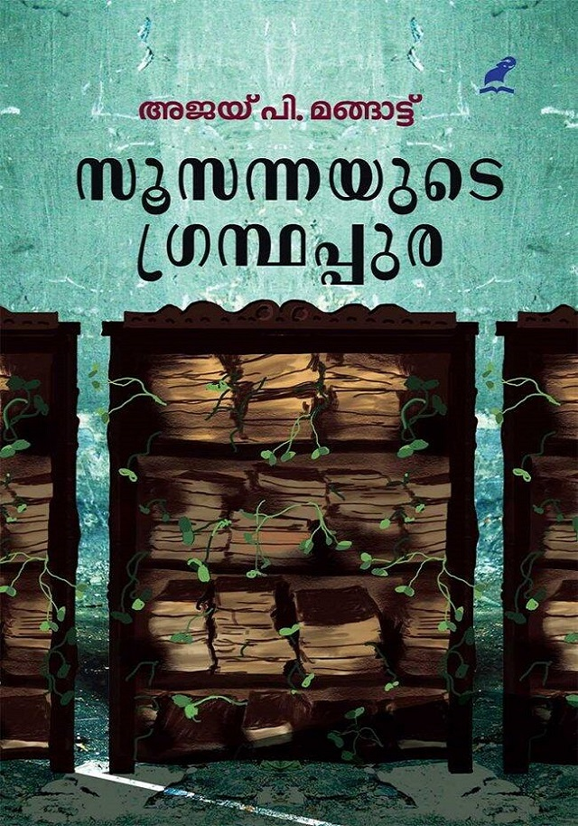

Author: അജയ് പി മങ്ങാട്ട്
Review by: സിന്ധു ഉല്ലാസ്
വായിക്കാൻ ആഗ്രഹിച്ചു മാറ്റിവച്ചിരുന്നതിലൊന്നാണ് അജയ് പി മങ്ങാട്ട് ന്റെ സൂസന്നയുടെ ഗ്രന്ഥപ്പുര.
വാശിയോടെ വായിച്ചു... ആദ്യം താല്പര്യം തോന്നിയില്ല... പക്ഷെ വായിക്കുന്നതോറും രസം പിടിച്ചു...
അഭിയും അലിയും സൂസന്നയും കൂടാതെ വെള്ളതൂവൽ ചന്ദ്രൻ, അമുദ, മതി, കാർമേഘം ഇങ്ങനെ... എത്ര എത്ര കഥാപാത്രങ്ങൾ...
നോവലിലുടനീളം ഒരുപാട് പുസ്തകങ്ങളും കഥകളും ആഖ്യാനങ്ങളും അനുഭവങ്ങളും കടന്നുപോകുന്നുണ്ട്. ദസ്തേവ്സ്കി, റൂമി, ബർട്ടൻ തുടങ്ങി അനേകം എഴുത്തുകാരിലൂടെ പുസ്തകങ്ങളിലൂടെ നോവൽ കയറി ഇറങ്ങി പോകുന്നു.
നീലകണ്ഠൻ പരമാര എന്ന എഴുത്തുകാരന്റെ പൂർത്തിയാക്കാത്ത നോവലിന്റെ കൈയ്യെഴുത്ത് പ്രതി അന്വേഷിച്ച് പോകുന്ന യാത്ര സൂസന്നയുടെ ഗ്രന്ഥപുരയിൽ എത്തിക്കുകയും അവിടെനിന്ന് നായകനായ അലി പലരേയും പരിചയപ്പെടുകയും ചെയ്യുന്നു. ഒരുപാട് അനുഭവങ്ങളിലൂടെയും മാനസിക സംഘർഷങ്ങളിലൂടെയും അലി ഈ കാലയളവിൽ കടന്നുപോകുന്നുണ്ട്...
ഒട്ടേറെ ജീവിത പരീക്ഷണങ്ങൾ ഏറ്റുവാങ്ങിയ സൂസന്ന തന്റെ മരണത്തിനു മുൻപ് ആ ഗ്രന്ഥപ്പുരയിൽ അമൂല്യമായ പുസ്തകങ്ങൾ തീയിട്ട് നശിപ്പിക്കുകയും പര മാര യുടെ കൈയെഴുത്തുപ്രതി മകൻ പോൾ വഴി അലിക്ക് നൽകുകയും ചെയ്യുന്നു. വളരെ കാലമായി എഴുതാൻ ശ്രമിച്ച ഒരു നോവൽ അലി എഴുതി തീർക്കുന്നതോടെ നോവൽ അവസാനിക്കുന്നു.
ബന്ധങ്ങളിലൂടെയും മനസ്സിന്റെ ഇരുൾ വഴികളിലൂടെയും സങ്കൽപ്പത്തിനും യാഥാർത്ഥ്യത്തിനും അ പ്പുറത്തേക്ക് ഒരു ഭാവന സഞ്ചാരം... അതാണ് സൂസന്നയുടെ ഗ്രന്ഥപ്പുര...
വായിച്ചു തീർന്നപ്പോൾ വലിയ ആശ്വാസം... നല്ലൊരു നോവൽ ആയതിൽ അതിലേറെ സന്തോഷം...